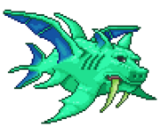

Пособие для новичков
Террария — игра жанра «песочница» (sandbox) в стиле 2D-платформера. Игра отличается настраиваемыми персонажами, случайно сгенерированными мирами, качественно сделанной графикой, динамической сменой времени суток, возможностью деформации ландшафта и системой крафтинга (создания предметов), которая дает игроку «жить за счёт земли», так как создание предметов необходимо для выживания. Система крафтинга также дает игрокам свободу в обустройстве окружения, начиная от рытья шахт и заканчивая строительством городов.
В игре имеется многопользовательский режим.
Но как же выжить в этом недружелюбном мире? В этом вам поможет данный гайд, который будет полезен для прочтения как новичкам, так и «матёрым» игрокам. Итак, начнём:
Ваши первые минуты в игре
При запуске игры вас ждёт довольно красивое меню. Вам высветится посередине несколько надписей, нажимаем на надпись «Singleplayer» (Одиночная игра.). Первым делом нажимаем там на кнопку «Создать персонажа» и делаем его. При создании персонажа можно выбрать пол, саму причёску, цвет глаз, одежды и прочие параметры, а также его сложность. Всего в игре 4 сложности:
- Низкая(Easycore) - персонаж с таким режимом при смерти теряет только монеты
- Средняя(Mediumcore) - персонаж при смерти теряет все предметы
- Сложная(Hardcore) - персонаж умирает навсегда
- Приключение(Journey) - совершенно новый режим, добавленный в 1.4. Представляет из себя "режим бога", где вы можете дублировать предметы, менять погоду и время, и другие параметры игры. Персонажи Journey могут войти только в мир с этим же режимом.
После того, как вы создали персонажа, необходимо сгенерировать мир. Все что от вас нужно, это придумать имя(с версии 1.4 имена можно сгенерировать), сид, размер и сложность. В игре на версии 1.4 для выбора представляются 4 сложности:
- Обычная("Приключения начинаются...") - стандартный режим игры. Подходит для начинающих.
- Эксперт - усложненный режим. Больше сложностей - больше наград.
- Мастер-мод("Game over, man, game over...") - самый сложный режим, сложнее обычного в 3 раза. Для тех, кому эксперт показался легким...
- Приключение(Journey) - "режим бога". Здесь вы творите все что угодно. Персонажи с другими режимами, кроме Journey, не могут попасть в эти миры.
- При создании мира можно выбрать мировое зло: искажение или кримзон. Искажение немного облегчит развитие в начале игры, тогда как кримзон немного упростит поздние этапы игры. Дайте миру имя, которое, в случае чего, можно будет изменить (с версии 1.4). После подтверждения названия начнётся процесс генерации мира, это может занять несколько минут.
Когда вы впервые войдёте в ваш новый мир, вы окажетесь в центре случайно сгенерированной карты.
Первый НИП, который вам встретится — это Гид. Можно поговорить с ним, нажав на него правой кнопкой мыши, он может дать вам пару игровых советов. Также он может помочь с крафтом. Достаточно положить предмет в специальную ячейку, и гид покажет, что можно сделать из этой вещи. Если из этой вещи ничего нельзя создать — её невозможно будет положить в ячейку. Хорошим решением будет подходить к гиду и класть в эту ячейку все незнакомые предметы, что найдёте во время странствий по игровому миру.
Гид может стать хорошим боевым напарником в начале игры, помогая вам сражаться с мобами своим луком.
Вы начинаете игру не с пустыми руками
В инвентаре на хотбаре (в верхнем левом углу) вы найдете медную кирку, медный кинжал и медный топор. Иногда у этих предметов есть модификации, как отрицательные, так и положительные. Вращая колёсико мыши, вы можете переключаться между слотами хотбара. Также для переключения вы можете использовать клавиши 1-9 или кликать мышкой по необходимому предмету.
В игре есть много других горячих клавиш, например:
H (англ.) — позволяет быстро использовать самое лучшее зелье здоровья в инвентаре.
Подробнее о горячих клавишах можно посмотреть в настройках самой игры.
Типы предметов, выдающихся в начале игры:
- Морковка — предмет, позволяющий призвать кролика, первого питомца. Он будет такого же цвета, что и ваша рубаха (только в коллекционном издании).
- Медный кинжал — ваше первое оружие, им вы можете убивать мобов.
- Медная кирка — используется для удаления и добычи дохардмодных блоков почти всех видов, начиная от земли и заканчивая золотой/платиновой рудой. Чем лучше кирка, тем быстрее и больше типов материалов можно ей добыть. C версии 1.2 киркой можно добывать мебель и прочие предметы. Также стоит отметить, что кирка не рубит деревья, которые сгенерированы изначально (для добычи сгенерированных в мире деревьев нужен топор или универсальный инструмент, включающий в себя функции топора), кирка срубает только блоки древесины, но не деревья. Также в игре присутствует тип инструментов, аналогичных киркам — буры.
- Медный топор — дает вам возможность рубить деревья, а также высокие грибы и кактусы — аналоги деревьев в разных биомах.

В первую очередь срубите дерево. Для того, чтобы сделать это, подойдите к дереву, выберите в качестве инструмента топор и зажатием левой кнопки мыши бейте по самому низу дерева. Добытые таким образом блоки можно ставить левой кнопкой мыши. Чем выше дерево, тем больше древесины с него выпадет.
Также, срубив дерево, вы можете получить жёлуди. Сажая жёлуди, можно выращивать новые деревья. Жёлуди с версии 1.2.3 можно сажать на любые типы почвы (включая снег и песок). Чтобы вырасти, дереву нужно расстояние в 1 блок слева и справа. Не сажайте жёлуди слишком близко друг к другу!
Далее вам понадобится камень. Для того, чтобы добыть камень, необходимо найти его залежи. Они встречаются среди земли и могут быть совсем недалеко от поверхности. Возьмите кирку, наведите курсор на блок и зажмите левую кнопку мыши. Блок выпадет, как и древесина.
Также в игре присутствует Умный курсор (смарт-курсор), который сам наводится на блоки и взаимодействует с ними в зависимости от их типа (например ставит/ломает блоки, открывает сундуки и т. д.), при нажатии ЛКМ/ПКМ. Активировать/Отключить его можно по нажатию на "LeftControl".
В течение игрового процесса вы можете быть атакованы слизнями. Чтобы избавиться от врагов, повернитесь к ним и нажмите левую кнопку мыши, держа в руке любой из инструментов (обычно для этой цели используется оружие, так как инструменты наносят куда меньше урона). После убийства слизня из него выпадет гель. Он используется для того, чтобы делать факелы и зелья, которые вскоре станут нужными предметами.
У некоторого оружия присутствует автоатака. Автоатака — это возможность одним зажатием левой кнопки мыши наносить непрерывные удары, которые закончатся только тогда, когда вы оторвёте палец от ЛКМ (также атака может закончится, если вы используете магическое оружие и у вас закончилась мана). Оружие без автоатаки использовать труднее — чтобы нанести удар, нужно кликнуть пальцем на ЛКМ, и так приходится делать каждый раз, как Вы хотите нанести удар.
Когда вы запасётесь достаточным количеством дерева, настанет время сделать верстак (чтобы создать его, нужно 10 единиц любой древесины или её аналогов из других биомов). Чтобы сделать его, нажмите ESC (или ту клавишу, на которую вы переназначили инвентарь, например, «E»), откроется инвентарь. В левом нижнем углу будет вертикальный список. Это предметы, которые вы можете создать. Выберите верстак (workbench) нажатием левой кнопки по его иконке, а затем перетащите в инвентарь. Ставится он так же, как и блок. Если открыть инвентарь рядом с верстаком, можно увидеть новые рецепты предметов. Самым лучшим вариантом будет создание деревянного лука и некоторого количества стрел, чтобы было легче защищаться от монстров. Обычные стрелы можно улучшить, если у вас есть факелы, благодаря которым можно сделать горящие стрелы, которые имеют больший урон. Также эти стрелы могут послужить источниками света, если ими выстрелить. Хорошим решением будет создание деревянного меча и использование его вместо медного кинжала. Также вы можете смастерить деревянную броню для небольшой защиты.
С наступлением ночи вам нужно будет укрытие, так как ночью на поверхности появляется множество сильных монстров. Для того, чтобы сделать его, вам понадобится твёрдый материал, например древесина или камень. Двери и стены (плюс фоновые стены) будут препятствовать появлению монстров внутри вашего жилища.
Прежде чем строить дом, начните с поиска плоского ландшафта, последовательно делайте «наброски» дома из собранных вами материалов. Но лучше конечно Построить дом в воздухе, к примеру можно построить вертикальные столбы из верёвок (они будут использоваться как вход) и на конце этих столбов уже строить комнаты (см. на картике №1). Конечно, если вы не успеваете до наступления темноты, и (или) не можете найти нужное место, можно построить временный дом (коробка, яма). Помните, что лучше строить дом на месте вашего появления в мире, только на один блок ниже. В противном случае вы будете разрушать блоки на месте появления. Когда ваш персонаж будет убит, вы автоматически переместитесь на ту точку, на которой вы появились в начале игры.
Вскоре Вам, для облегчения игры, понадобиться НИПы. Чтобы НИПы обжились в доме, необходимо наличие поставленной двери. Удалите три вертикальных блока (под рост персонажа) и поставьте на их месте дверь. После этого следует поставить фоновые стены в доме (каменные или деревянные). Фон дома должен быть полностью заполнен. Смастерите факел и поместите его внутри здания. Этот источник света необходим НИПу для проживания. Вам также понадобятся одно рабочее место и один предмет комфорта (простейший вариант — комната 10 x 6 (Для экономии дерева можно сделать из платформ), стол и стул, но можно, например, кровать с верстаком) в вашем доме для НИПов. (см. на картинке №2)
ВАЖНО! Чтобы дом подходил для проживания НИПу, в полу должен быть хотя бы один блок дерева и обязательно под стулом (для того чтобы НИПы могли садится на стул)
Поздравляем! Вы успешно построили ваше первое убежище в Террарии!
Ранние исследования
Теперь, когда у вас есть безопасное убежище, вам захочется немного заняться исследованием мира. Вперёд! Вот на что надо обратить внимание:
- Руды. В игре существует много разных типов руды, например, медь, железо и серебро. У руд также есть альтернативы: Медь — Олово, Железо — Свинец, Серебро — Вольфрам, и так далее (подробнее можно узнать на основной статье о рудах). При этом инструменты из олова немного мощнее, чем из меди, свинец лучше железа, а вольфрам — серебра. Если в мире сгенерировался один вид руды, то её альтернативы там не будет. Руды могут быть переплавлены при помощи печи в слитки, и затем из них можно выковать оружие и доспехи при помощи наковальни , которая делается из 5 единиц железа (или свинца), а также может быть куплена у торговца за 50 серебряных монет, они выпадают из разных мобов.
- Грибы. Существует четыре типа грибов. Обычные (красные) грибы, которые растут на или около поверхности, их можно съесть, при съедании восстанавливается 15 HP и накладывается эффект послезельевая болезнь, а также используется в крафте малого лечебного зелья и зелья регенерации. Гнусные (фиолетовые) грибы, которые растут на поверхности в искажении. Порочные (красные с серой ножкой) грибы, которые растут в кримзоне. Светящиеся (синие) грибы, которые растут глубоко под землёй, они используются для крафта лечебного зелья и некоторых других.
- Горшки. Они находятся на поверхности и в пещерах, и могут содержать всё: от монет до бомб. Разбить их можно, ударив любым предметом.
- Сундуки. Могут содержать редкие аксессуары, монеты, оружие, зелья, слитки.
- Драгоценные камни. Они встречаются довольно редко, так что если посчастливилось найти их, не забудьте собрать. Драгоценные камни являются неотъемлемой частью мощного метеоритного оружия, такого как фазовый меч, а также нужны для создания волшебных посохов, хороших крюков и некоторых других полезных вещей.
- Кристальные сердца. Если вы нашли одно из них, вам повезло. Если вы разобьёте его киркой и используете на персонаже, то вы получите одно дополнительное сердечко навсегда (+20 HP). После использования первого кристального сердца к вам придёт НИП-медсестра, если вы построили дом для неё, которая будет вас лечить за плату в виде монет (стоимость будет расти по мере прохождения игры).
- Упавшая звезда. Каждую ночь они падают с неба. Из пяти звёзд можно сделать кристалл маны , если вы используете её на персонаже, то вы получите одну дополнительную ману (+20). Также их можно использовать для других крафтов.
- Цикл смены дня и ночи. Когда кончится день и наступит ночь, следует как можно скорее вернуться в безопасное место, или приготовиться к уничтожению множества зомби и демонических глаз. Настоятельно рекомендуется обратить внимание на лук и стрелы, они сочетают в себе хороший урон и дальность поражения, но при этом стрелы летят не по прямой, а навесом, причем рекомендуется делать подожжённые стрелы из обычных, они наносят больше урона и имеют шанс поджечь врага. Создать их можно без какого-либо верстака из 10 стрел и факела.
Исследование мира
Теперь, когда у вас есть ресурсы и своё убежище, можно отправиться путешествовать по миру, в нем Вы можете найти разные биомы о которых будет идти речь дальше.
Пустыня

Мобы: Стервятник, Муравьиный лев, Взрослый муравьиный лев, Муравьиный лев-воин, Пустынный ползун.
Предметы: Кактус, Воднолист, Челюсть муравьиного льва, Песок
Ценности: Пирамида
Сложность: выше среднего
Пустыня — биом, который полностью состоит из песка, и в нем спавнятся довольно опасные для новичков мобы — стервятники и муравьиные львы. Также есть шанс найти в пустыне пирамиду с сокровищами. В пустыне есть свой аналог деревьев — кактус (Пальмы). Добыв его, можно сделать неплохое для новичка снаряжение. В пустыне иногда можно найти громадный провал вниз, который ведёт в пещеры с опасными мобами — подземные пустыни. Берегитесь: из провала могут вылететь сильные летающие монстры, которые способны с лёгкостью убить неподготовленного персонажа.
Снежный биом

Мобы: Ледяной слизень, ночью: Зомби-эскимос
Предметы: Снег, Лёд, Гель, Северная древесина
Ценности: Сундуки, Пещеры
Сложность: ниже среднего
В этом биоме лёгкие и слабые монстры, но спускаясь в пещеру, вы увидите более мощных, таких как скелет-викинг. Также тут есть сундуки с полезными вещами. И ко всему этому со стороны Снежного биома всегда находится Данж.
Гигантское дерево
Если вы найдете гигантское дерево, можно пустить его на дрова или же поселиться в нем, кроме того, у некоторых деревьев в корнях можно найти комнату с сокровищами, в которой уже есть стол, стулья и двери, поэтому, поставив источники освещения, можно заселить в этой комнате НИПов. Также можно найти сундук, который по содержанию похож на обычный, однако содержит в себе ветвь живого дерева, жезл листвы и иногда станок из живой древесины.
Искажение
Мобы: Пожиратель душ, Поглотитель
Предметы: Гниль, Мерзкий гриб, Зуб червя, Эбонитовая древесина,Древняя теневая броня, Смерть-трава
Ценности: Теневая сфера, Демонит, Демонический алтарь
Сложность: выше среднего — сложная
Искажение — это опасный биом, где можно найти редкие предметы, но идти туда следует с хорошим снаряжением, например, с крюком-кошкой, потому что здесь есть расщелины, куда можно провалиться.
Из местных летающих монстров — пожирателей душ, может с очень маленьким шансом выпасть часть комплекта древней теневой брони. Но даже одна такая часть может стать серьёзным бонусом к боеспособности персонажа.
Подземное искажение
Спустившись в подземное искажение, вы найдете много алтарей и теневых сфер, лежащих за слоем эбонита. Сломать стандартным вооружением эбонит нельзя, поэтому закупитесь бомбами и динамитом у подрывника и сломайте сферы. Также можно купить у дриады очищающий порошок и использовать его на эбоните, превращая его в обычный камень. Из сфер выпадают уникальные предметы — но будьте осторожны! Разбитие третьей сферы приведет к призыву Пожирателя миров, так что будьте готовы. Победив его, вы получите демонит и теневую чешую, из которых можно сделать оружие, инструменты и броню.
Помимо этого, в подземном искажении есть обширные природные залежи демонита, который можно добыть теми же бомбами или киркой по равной мощности, либо мощнее золотой кирки.
Кримзон

Мобы: Кримера, Лицемонстр, Кровавый ползун
Предметы: Позвонок, Порочный гриб, Древесина тьмы,Смерть-трава
Ценности: Живое сердце, Кровавый алтарь
Сложность: сложная
Кримзон — это альтернатива искажению, в которой имеются свои мобы и босс. Вместо расщелин здесь широкие проходы в подземный кримзон, где находится много живых сердец и алтарей. В самом начале рекомендуем не ходить туда, мобы там сносят большой урон и имеют много здоровья.
Подземный кримзон
Подземный кримзон во многом схож с искажением. Вместо теневых сфер — живые сердца. С разбитием каждого третьего сердца призывается босс — Мозг Ктулху, при победе над которым можно получить ценные ресурсы для создания новой брони и оружия. Также его можно призвать с помощью кровавого позвоночника.
В отличие от подземного искажения, в подземном кримзоне нет залежей кримтановой руды, в то время, как в искажении есть демонит.
Парящий остров

Мобы: Гарпия и в хардмоде(после убийства Стены Плоти) Архививерна (мобильная версия), Виверна
Предметы: Перо, Дерево, Мебель небесных островов, разная Руда.
Ценности: Сундук / Озеро
Сложность: выше среднего — сложная
Парящие острова расположены высоко в небе и без помощи зелья гравитации до них добраться очень трудно. Вокруг этих островов летают гарпии — опасные мобы, умеющие стрелять перьями. Для неподготовленного игрока они могут стать трудными противниками, особенно в большом количестве.
На летающем острове может быть либо большое озеро, либо фрагмент леса, либо сокровищница с небесным сундуком и фрагмент леса. На острове могут сгенерироваться разные рудные жилы, подсолнухи и деревья. Также, предметы, лежащие в небесных сундуках приятно вас порадуют.
Чуть выше парящих островов расположен небольшой биом космоса. Его отличие в абсолютно чёрном, космическом фоне, ослабленной гравитации и в повышенном количестве гарпий.
Океан
Мобы: Акула, Медуза, Краб, Кальмар, Морская улитка, Разведчик гоблинов
Предметы: Акулий плавник, Светящаяся палочка, Порванная ткань, Воднолист
Ценности: Сундуки, Редкий дроп, Особый улов, Ингредиенты для красителей
Сложность: выше среднего
Океаны расположены в левой и правой границами мира, на поверхности, соответственно в мире всегда присутствуют два океана. В океане есть множество подводных монстров. Кроме монстров, глубоко под водой есть водные сундуки с полезным лутом.
Для исследования подводной зоны океана рекомендуется оружие дальнего боя, одновременно генерирующее свет. Например: лук с морозными стрелами, которые светятся и горят даже под водой. Будьте осторожны, в любой момент на вас может напасть акула. У неё множество хит-поинтов, а её удары наносят большой урон.
Рядом с одним из океанов обязательно будет расположен данж.
Данж

Мобы: Злые кости, Тёмный колдун, Проклятый череп, Огненное кольцо, Слизень данжа, Шипастый шар
Предметы: Кость, Водяная свеча, Малое зелье лечения, Книга, Готическая мебель, Мебель данжа, Водяная стрела, Голубая луна
Ценности: Сундуки, Редкий дроп
Сложность: сложная
Данж — биом, при походе в который нужно запастись сильным оружием и бронёй. Данж представляет собой крепость, в которой находится много сокровищ и опасных монстров, но войти туда можно только после убийства Скелетрона. Чтобы призвать босса, нужно поговорить с НИПом-стариком у входа в данж ночью. Убив Скелетрона, вы получите артефакты, деньги, вещи и доступ к самому данжу.
При попытке войти в Данж без убийства Скелетрона, при достижении глубины ниже нулевой отметки на уровне моря вас попытается убить (и, скорее всего, сделает это) Хранитель Данжа.
Джунгли

Мобы: Шершень, Похититель, Пчелы, Мобы из пещер, Шипастый слизень джунглей, Людоед
Предметы: Семена джунглей, Жало, Споры джунглей, Роза Джунглей, Дар природы, Луноцвет
Ценности: Сундуки, Редкий дроп, Улей, Храм ящеров
Сложность: сложная
Теперь можно отправляться в джунгли. В пещерах джунглей обитает много опасных существ, но, убив их, вы можете получить вещи для создания брони и оружия джунглей. В джунгли присутствует особый тип древесины - красная древесина, или же махагони, а так же здесь растет бамбук, так же являющийся аналогом дерева.
Ад

Мобы: Огненный черт, Огненная летучая мышь, Лавовый слизень, Демон, Демон вуду,Костяной змей
Предметы: Адский камень, Обсидиановая мебель, Лава, Огненный цветок, Ярость Солнца
Ценности: Сундуки, Редкий дроп, Кукла вуду гида, Горшки
Сложность: очень сложная
Ад — самый опасный дохардмодный биом. Опасен он из-за сильных мобов и большого количества лавы. Также тут можно найти теневые сундуки с уникальными вещами (потребуется теневой ключ, который находится в одном из сундуков данжа, (чаще всего в самом первом) который открывает теневые сундуки), крепости с мебелью, картинами и большим количеством горшков.
Набрав руды, вам нужно сделать в первую очередь пламенный меч: он послужит ингредиентом для Грани ночи (Если вы уже знакомы с классами, и имеете сильное оружие и броню для вашего класса - делать это не обязательно: Литая кирка будет полезней). При нахождении и убийстве демона вуду, вам выпадет кукла вуду гида, и, кинув её в лаву, вы призовете ключевого босса игры — Стену плоти.
Рыбалка

Террария — это не только непрерывный геноцид монстров и умерщвление боссов, в ней есть мирные аспекты. Одним из таких аспектов является рыбалка. Что такое рыбалка? Рыбалка — это мирный способ получить хорошее снаряжение в начале игры, не бегая по опасным и тёмным шахтам в поисках руды, постоянно умирая в процессе. Ещё в самом начале игры, просматривая список крафтов из дерева на деревянном же верстаке, можно наткнуться на деревянную удочку. Это — первое рыбацкое орудие.
Однако одной только удочки для рыбалки недостаточно, нужна ещё Наживка. Наживку можно раздобыть, поймав её сачком, который можно купить у торговца. Основные виды наживки — это червь и светлячок. Светлячки в обилии появляются ночью, если вы постоите на одном месте некоторое время. Черви могут появляться во время дождя или при разбивании различных кучек камней, поросших мхом, которые можно встретить на поверхности повсеместно.
Конечно же, наживки и удочки для рыбалки будет недостаточно. Нужен водоём, в котором можно рыбачить. Чем больше водоём, тем эффективнее будет рыбалка, в слишком маленьких водоёмах рыбалка вообще невозможна. В качестве водоёма для рыбалки рекомендуется океан, помимо стандартного улова там можно выловить: рыбу-меч, которая может стать хорошим начальным оружием; акулу-кирку, которая является отличной киркой дохардмода и рыбу-пилу, которой можно быстро пилить деревья и монстров.
Также в океане можно найти специального НИПа-рыбака. Он будет давать вам задания на поимку той или иной рыбы, а взамен на эту рыбу будет выдавать некоторое вознаграждение. И чем больше заданий будет выполнено, тем лучше будет награда.
Улов варьируется в зависимости от биома, в котором ведётся рыбалка. Например, глубоко в пещерах можно поймать зеркальную рыбу, в то время как на поверхности её просто нет.
Рыбача, можно выловить много полезных вещей — ящики, лягушачью лапку, воздушную рыбу-фугу, рыбу-зефир. Но, эти вещи являются весьма редким уловом. Для того, чтобы заполучить их потребуются усидчивость и упорство.
ткрыв ящики, можно получить деньги, зелья, руду, слитки, аксессуары, оружие, питомца, маунта и другие игровые блага. Вообще, рыбалка во многом может заменить походы по пещерам, однако она никогда не сможет сделать этого полностью.
Переход в хардмод (сложный режим)
Перед тем как перейти в хардмод, разумным решением будет сделать грибной биом для Трюфеля. Для битвы со Стеной Плоти вам потребуется минимум броня из теневой чешуи, побольше аксессуаров, крюк-кошка и 200 ед. здоровья. Ещё вы должны сделать адскую кирку из адской руды, которой можно добывать первую хардмодную руду — кобальт/палладий. После убийства Стены Плоти ваш мир перейдёт в режим «хардмод». Это означает, что игра станет намного сложнее. Появятся новые монстры, искажение/кримзон будет распространяться очень быстро — вы даже не сможете за ним уследить, появится новый биом — святые земли, который содержит множество опасных врагов и быстро распространяется, и многое другое, к чему вы должны быть готовы.
После, вы должны пойти в искажение (или кримзон) и разбить демонические/кровавые алтари с помощью нагибатора, который всегда выпадает со Стены Плоти. Можно ломать сколько угодно алтарей, но один желательно оставить для крафта (желательно ближе к дому)! Разбитие алтарей не только приведёт к появлению новой руды в мире, но также с небольшим шансом может заменить 1 блок камня на перлит, эбонит или кримонит в случайном месте в мире (что приведет к появлению еще одного подземного биома святых земель, искажения или кримзона, который начнет стремительно разростаться) будьте осторожны: когда вы разбиваете алтарь, то на вас нападает несколько призраков. После уничтожения алтарей вы можете начать поиски новой руды. Можно пойти в ваши старые исследованные/заброшенные пещеры и шахты, вероятно, там может быть новая руда. Для вас вначале будет представлять ценность только синяя (кобальт) или оранжевая (палладий) руда, поскольку другие вы выкопать не сможете (места с прочей рудой стоит отметить, чтобы собрать её в будущем). Во время исследования могут попасться много незнакомых врагов, которые сильнее вас, поэтому нужно использовать тактику укрытий и лечения. Во время путешествий по пещерам вы можете наткнуться на подземные святые земли и на подземное искажение/кримзон. Каждый из них опасен по-своему, подземное искажение будет похоже на джунгли, а подземные святые земли — на обычные пещеры. Также вы можете заметить, что в подземных святых землях на перлите растут разноцветные кристаллы. Можете собрать их, чтобы сделать огромное зелье лечения, которое восстанавливает 150 HP. Помимо этого есть возможность сделать из них фазовую саблю (но только если у вас есть фазовый меч) — отличное оружие в начале хардмода. Также вы можете найти нового НИПа в пещерах — волшебника. Он продаёт вещи, которые могут помочь вам в дальнейшем (такие как ледяной жезл, колокольчик, и арфа).
После добычи кобальта/палладия, первым делом вы должны будете сделать кобальтовый бур/палладиевый бур или кирку, чтобы добывать мифрил/орихалк (салатовая/розовая руда), а также начинать откладывать на палладиевые или кобальтовые доспехи, меч(но делать это необязательно, так как грань ночи с хорошей ковкой может заменить все мечи до экскалибура), копьё, и арбалет. После крафта доспехов, вы можете отправиться добывать важную вещь на начальных уровнях — цепь Инь-Ян. Она может стать вашим главным оружием против толп монстров или тварей сегментированного типа. При нахождении мифрила/орихалка, вы должны сделать из него орихалковую или мифриловую наковальню, необходимый предмет для создания почти всех хардмодных вещей (включая кристаллические пули и цепь Инь-Ян).
Далее вам понадобится новый аксессуар — крылья. Но сделать их будет не просто, вам нужно будет находиться на уровне, необходимому для создания парящих островов. Вам понадобятся перья из гарпий и души нового моба парящих островов — виверны. Это сильный монстр, имеет 4000 ед. жизни и мощную атаку. Виверна — сегментированный монстр. Это означает, что лучше будет использовать любое проникающие оружие, как против Пожирателя миров. Вам понадобится 20 таких душ, чтобы сделать крылья (это примерно 2-4 виверны). Можно сделать крылья из душ света/ночи. Какие души вы выберете, такого типа и будут крылья. Однако, есть более хитрый способ добыть себе крылья. Первым делом мы идем в подземные джунгли (желательно до перехода в хардмод) и находим пчелиный улей. Далее мы убиваем Королеву Пчёл и строим дом на поверхности джунглей(в идеале — создаём соответствующий биом у себя на базе прямо внутри дома для шамана, чтобы не рисковать, гуляя по хардмодным джунглям) и ждем пока не придет шаман. После всего этого нужно накопить одну платину, открыть хардмод, а потом идти к шаману ночью и покупать крылья. Ингредиенты для создания крыльев также можно получить с других существ (пыльца мотылька, сломанные крылья вампира и т. д.). После похода в подземные святые земли или подземное искажение/кримзон вы соберёте достаточно душ (а также вероятно ещё кобальта/палладия и мифрила/орихалка). Теперь вы можете возвращаться домой, чтобы скрафтить слитки (если вы собирали руду) и крылья. Крылья — это не обязательный аксессуар, но он может очень помочь вам. Главным плюсом является то, что вы не получаете урона от падения (что делает счастливую/обсидиановую подкову бесполезной), а также можете летать. Вы можете использовать ваши молниеносные ботинки, чтобы увеличить время и скорость полёта.
Итак, теперь приступаем к созданию орихалковой или мифриловой брони. После добычи мифрила/орихалка вы можете отправиться на добычу адамантита/титана (красная/серебристая руда). Адамантит/титан добывается только мифриловым/орихалковым или выше буром/киркой, поэтому без него его не добыть. Адамантит/титан находится глубоко под землёй, нередки случаи, когда его находили даже в аду. Адамантит/титан — это ваша финальная руда. Когда вы соберёте руду, вы не сможете её просто так переплавить в слитки — для этого понадобится титановая/адамантитовая печь.
Есть способ очень сильно облегчить развитие в хардмоде с помощью игровой «фичи». В этом поможет рыбалка. Во время рыбалки можно получить ящики, открыв которые можно получить руду или готовые слитки. Если вы выловите ящик до хардмода, отложите его в надёжное место и затем откроете его в хардмоде, то получите хардмодные слитки/руду. Таким образом вы избавляете себя от опасных походов по пещерам, наполненных невероятно сильными монстрами, которые способны прикончить вашего персонажа за несколько ударов. Но ничего не даётся так просто: чтобы накопить достаточное количество ящиков для создания всего титанового снаряжения нужно провести часы за рыбалкой. Чтобы при переходе в хардмод ни в чем себе не отказывать вам понадобится минимум 15 золотых/биомных ящиков, 30 железных ящиков и 60 деревянных ящиков. Это много и рыбачить придётся очень долго. Ещё плюсом от данного метода является то, что вам не обязательно будет ломать алтари. Если вы не будете ломать алтари, то избавите себя от внезапных пиратских нашествий и внезапно из ниоткуда взявшихся кримзона/искажения/святых земель.
К сожалению начиная с версии 1.4.0.1 ящики были разделены на Прехардмодные и Хардмодные. Из прехардмодных не могут выпасть вещи хардмода такие как слитки, души (Из биомных ящиков) и т.д, поэтому нарыбачить их до убийства Стены Плоти не получится, что сильно усложняет использование рыбалки с целью получения нужных вещей.
Итак, настал момент когда вы собрали достаточно адамантита/титана, мифрила/орихалка и кобальта/палладия. Далее вы должны сделать святую броню, а так же мощные инструменты. Для этого вам нужен лут хардмодных боссов.
Вы должны быть готовы на все 100 %, чтобы победить их, поэтому не жалейте зелий, патронов и улучшений — они могут помочь в особенно ответственный момент. Желательно начинать с Уничтожителя, потому что он является самым слабым по тактике боя, но не по силе, следующими будут являться Близнецы, а потом Скелетрон Прайм.
Битва с Королевой слизней
После перехода в хардмод, мы можем убить Королеву слизней — босса, добавленного в обновлении 1.4. Чтобы призвать босса, необходимо найти Желатиновый кристалл в подземном Святом биоме. Находим и ломаем данный кристалл. После идём на поверхность. Арена для убийства босса может не понадобится, если имеются любые крылья, кроме Крыльев птенца. Лучше всего иметь на данный момент Адамантитовую броню или Титановую броню. Лучшее оружие для убийства босса — Штормовой лук Дедала, который может выпасть с Святого подражателя.
Начинаем убивать босса — в первой фазе мы должны стрелять в саму королеву, уворачиваясь от её атак, и атак прислужников. Внимание! После босс переходит во вторую фазу, и может летать. Необходимо больше держаться на земле и уворачиваться от её выстрелов! Тем не менее, босс становится менее защищённым. Стреляем в босса, уворачиваемся от атак. Так убиваем босса.
Битва с Плантерой
После победы над тремя хардмод-боссами, вам нужно направиться в хардмодные джунгли, где появились новые опасности: черепахи, гигантские блохи и другие монстры. Первая задача — нужно найти хлорофит и добыть его киркопором или буропилом для создания хлорофитовой брони. Добудьте около стака хлорофита. Так много его нам понадобится для создания более совершенной брони. Во-вторых, найдите розовый бутон и начните строить арену для предстоящей битвы с боссом — Плантера. Для её призыва просто сломайте светящийся розовым бутон киркой. После победы над Плантерой вам выпадет ключ к храму ящеров.
Плантеру легко убить, надо лишь поставить костры, сделать большую арену, поставить лампу-сердце(желательно), нужно около 400—500 жизней, просто вращайтесь вокруг неё на крыльях, а также уворачивайтесь от отскакивающих шипов. Стреляйте прямо в Плантеру с мегаакулы (кристальные, ихоровые пули — самое то), щупальца умрут сами от прислужников или от ваших промахов.
Внимание! При выходе из подземных джунглей босс впадает в «разъярённое» состояние, при котором её защита, атака и скорость значительно повышаются. Поэтому сражаться с ней вне джунглей строго не рекомендуется!
Битва с Императрицей света
После убийства Плантеры - в Святом биоме можно найти Призматическую Златоглазку, её нужно словить сачком.
После чего идём убивать босса в Святой биом. Внимание! Не убивайте Призматическую Златоглазку днём, иначе Императрица света станет в разы сильнее и будет убивать с одного удара, но если вы всё-таки сумасшедший, то разрешаю)Ждём ночи. Выпускаем бабочку из инвентаря и убиваем. На этом этапе необходимо уворачиваться от каждой атаки. Также Императрица пытается ударить вас со спины, держитесь с ней на расстоянии. После того, как у босса остаётся примерно треть здоровья, она переходит во вторую стадию, где становится сильнее. Уворачиваемся от атак и убиваем её.
Босса следует убить ради оружия для всех классов. Для призывателя — Калейдоскоп и Террапризма, для мага — Ночное зарево, для воина — Звездный свет, для стрелка — Вечер. Также с шансем 2 % в Режиме Эксперта, и в Мастер-моде может выпасть оружие на мага — Звёздная мелодия. Как бонус - Крылья Императрицы.
Хардмод-данж
После получения лута с Плантеры и Императрицы Света - вы станете достаточно хорошо экипированы, чтобы пойти в обновлённый данж. После победы над Плантерой в нем появились очень сильные монстры, например, паладин или сатанист. Также в данже остались особые сундуки с уникальными предметами. Ключи для этих сундуков можно получить в виде лута из тематических монстров каждого из биомов. В мире в данже может появиться только 4 из 5 таких сундуков, придётся постараться, чтобы выбить драгоценный лут. Из новых усиленных монстров данжа можно получить множество новых полезных предметов, например тактический дробовик, снайперская винтовка и другие.
Храм ящеров
Храм ящеров — локация, расположенная в джунглях, которая является довольно сложной. Она становится доступной для посещения сразу после убийства Плантеры. Чтобы попасть в этот храм, нужно открыть дверь с помощью ключа, который выпадает из той же Плантеры. Теперь, когда ворота открыты, убедитесь, что вы достаточно экипированы. В храме полно мощных ловушек, которые можно забрать себе. Также храм имеет уникальную мебель, а в сундуках можно найти батарейки для призыва босса. Когда вам удастся дойти до конца храма - вы найдете алтарь ящеров, который призывает Голема с помощью батареек, поэтому удобно добыть и принести его домой поставив под него Активаторы, и включить их (Это не работает на версиях 1.4.0.1 и выше). Из Голема можно получить уникальные предметы, поэтому можно победить его несколько раз.
Голема легко убить при помощи Жезла туч, Золотого дождя и Мегаакулы со святой бронёй и выше.
Битва с Герцогом Рыброном
После сбора лута в хардмод-данже и храме ящеров, а также фарма тыквенной и морозной лун вас ждёт битва с сильным боссом — Герцогом Рыброном. Чтобы вызвать Рыброна, вам следует поймать сачком трюфельного червя в подземном грибном биоме. Затем порыбачить этим червём в океане, Герцог придёт. К битве с ним стоит подходить основательно: постройка арены, максимум зелий, качественное снаряжение (в том числе то, что вы получили из особых сундуков биома) и весь накопленный вами в игре опыт. Хорошим аксессуаром при битве с ним будет Ховерборд, который даст вам высокую манёвренность. Из Рыброна выпадают очень хорошие аксессуары и оружие.
Отлично подойдут Костры, лампа с сердцем, бутылки со звездой, НЛО, Благословенное яблоко и сосновый хвоемёт со спектральной броней(с капюшоном)
Стоит заметить, что трюфельного червя вы можете обнаружить уже после перехода в хардмод — то есть, после убийства Стены Плоти, следовательно Рыброна можно призывать сразу же после перехода в хардмод, однако чтобы победить его со снаряжением раннего хардмода нужно быть настоящим ветераном Террарии с выдающимися геймерскими способностями. Поэтому Герцога Рыброна рекомендуется проходить в позднем хардмоде.
Внимание! При выходе из океана босс впадает в «разъярённое» состояние, при котором защита, атака и скорость герцога значительно повышаются. Поэтому сражаться с ним вне биома океана строго не рекомендуется.
Рыброн является «внесюжетным» боссом и его убийство вовсе не обязательно.
События
Во время игры, вы, скорее всего, испытаете кровавую луну — событие, происходящее только по ночам с вероятностью 1/7, возможно даже несколько раз подряд. Оно может произойти если у вас больше 120 ед. здоровья и на небе есть луна (все фазы, кроме новолуния). С наступлением ночи кровавой луны на экран выводится сообщение «Восходит кровавая луна» (The Blood Moon is rising). Небо, вода, и собственно сама луна окрашиваются в кровавый оттенок. Прирост численности монстров увеличивается вдвое, а зомби могут выламывать двери. Таким образом, наземные строения подвергаются массированному штурму. Для начинающих игроков лучше всего переждать кровавую луну в доме, заблокировав двери одним блоком перед ними, таким образом мобы не смогут зайти к вам в дом. Если вы уже будете игроком с хорошим снаряжением, то можете хорошо пофармить, а также выбить некоторые уникальные предметы. При переходе в хардмод, врагов становится больше, и они соответственно сложнее.
Пиратское вторжение — событие в хардмоде, во время которого видимую вами область атакуют пираты. Прибывают они так же, как вторжение гоблинов или снежный легион, — с одной стороны к середине мира. Чтобы завершить событие, потребуется убить определённое количество пиратов. После победы в свободную комнату заселяется капитан пиратов. Вы можете вызвать это событие сами, использовав пиратскую карту, которая выпадает только в хардмоде с шансом 1 % из любых мобов на поверхности не дальше 380 блоков от края мира, то есть, в океане.
Солнечное затмение — событие в хардмоде, похожее на кровавую луну: вас будут осаждать уникальные враги. Данное событие может появиться днём, и только после перехода в хардмод. Шанс солнечного затмения — 1:25. Если у вас была кровавая луна, то шанс появления солнечного затмения сразу после кровавой луны увеличивается. Также, если вы убивали механических хардмодных боссов (Уничтожителя, Близнецов, Скелетрона Прайма), на вас могут напасть более сложные формы врагов. Например: жнец. После убийства Плантеры разнообразие врагов пополняется: например мясником, психом и Мотроном. С врагов солнечного затмения падает очень хорошее оружие и аксессуары. Если вы уверены в своих силах и хотите искусственно призвать солнечное затмение — можете пофармить с ящеров в храме джунглей фрагменты солнечной плиты и создать солнечную плиту. Солнечное затмение необходимо для создания терра-меча - почти самого лучшего меча в игре.
Марсианское безумие — событие, которые может начаться после убийства Голема. Безумие начинается с появления марсианского зонда, сканирующего вас и, по окончании исследования, улетающего прочь. Событие можно предотвратить, уничтожив зонд или убежав от него до того момента, как он вас заметит. Важнейшим врагом будет для вас Летающая тарелка, с которой и падают полезные предметы.
Когда вы собрали лут с солнечного затмения, то пришла пора вам фармить и собирать лут с тыквенной и морозной луны. Это очень сложные события, которые длятся всю ночь. Во время этих событий вас будут атаковать уникальные, в рамках призванного события враги и боссы самого события. Оба события разделены на волны. То есть вы должны убить определённое количество врагов, чтобы перейти на новую волну, где врагов будет больше, и их разнообразие увеличится, а также увеличится шанс дропа ценных вещей с самих врагов. Чтобы выдержать данные события, вам понадобится создать арену, заполнить область потенциального спавна мобов ловушками из храма ящеров, запастись зельями, активировать статуи, например, статую сердца. Но конечно, самым важным аспектом прохождения этих событий будет позвать друзей, для совместного и более лёгкого прохождения. Если же такой возможности нет, попробуйте создать команду из незнакомых людей. Поверьте, не вы один будете испытывать необходимость в прохождении этих событий. Собрав людей, разбейтесь на классы, оденьте соответствующие комплекты брони, распределите роли.
Тыквенная луна
Начинать вам стоит с тыквенной луны, это более простое событие по сравнению с морозной луной. Чтобы призвать тыквенную луну, вам понадобится медальон тыквенной луны. Для его создания требуются святые слитки, эктоплазма и тыквы. Если с святыми слитками и эктоплазмой всё довольно понятно как добыть, то для добычи тыкв вам нужно либо купить семена тыквы у дриады, и вырастить их на обычной земле, либо дождаться Хэллоуина, который длится с 20 октября по 10 ноября. Либо, выставьте у себя на компьютере нужную дату (например, 20.10.2016) и ничего не ждите, Террария подумает что у вас уже осень, и начнёт Хэллоуин. Кстати говоря, этим же приёмом можно имитировать Рождество. Тыквы будут расти на поверхности. Способы прохождения тыквенной луны описаны здесь. Всего в Тыквенной луне 15 волн, ваша цель добраться до последней.
Морозная луна
Более сложная по сравнению с тыквенной, для призыва вам понадобится подарок для непослушных. В событии 20 волн, ваша цель опять же, дойти до последней и сражаться до конца ночи. Во время призыва и тыквенной и морозной луны учтите: время работает против вас, так что как только начинается ночь, сразу же используйте подарок. Для прохождения вам могут понадобиться предметы, которые вы получили из тыквенной луны. Тактики по прохождению описаны здесь
Культист-лунатик
Близится конец игры. После уничтожения Голема на входе в данж появятся культисты. Изначально они нейтральны к персонажу игрока — культисты не будут атаковать ровно до тех пор, пока игрок не атакует их. После того, как все четверо культистов будут убиты появится их главарь. Культист-лунатик. Он сильно отличается от всех боссов своими размерами и атаками. В отличие от всех остальных боссов, он лишь чуть больше самого персонажа. Его атаки резкие и быстрые, весьма разнообразные и мощные.

В бою с ним рекомендуется использовать самонаводящееся оружие, например мегаакулу с хлорофитовыми пулями. Из-за малых габаритов босса по нему трудно попасть, учитывая, что он постоянно совершает резкие скачки в воздухе.
Небесные башни
Как только вы убьёте босса-культиста - в мире появятся 4 небесные башни. Башни будут расположены равно-удалённо друг от друга. Центр мира(точка спавна) будет располагаться ровно по центру между двумя небесными башнями.
Вокруг башен образуется особый временный биом — место, в котором спавнятся уникальные монстры, из которых не выпадает дропа. Каждый биом уникален. В каждом биоме противники соответствуют тематике своей небесной башни.
Башни защищены особым щитами, защищающими их от любых атак. Для того, чтобы убрать щит - нужно убить определенное количество врагов принадлежащих определенной башне соответственно, которые в больших количествах появляются вокруг башен. С каждым убитым мобом щит будет становиться прозрачнее и слабее. В обычном режиме требуется убить 100 врагов для снятия щита, в режиме эксперта нужно 150, в режиме мастера - 200
После того как щит падёт - башня станет доступной для атак. Всё, что вам останется сделать - уничтожить башню. После победы над башней из неё выпадут особые фрагменты, из которых на древнем манипуляторе создается почти лучшая экипировка в игре.
После победы над всеми небесными башнями - ровно через минуту придёт финальный босс игры — Лунный лорд. На протяжении этой минуты экран будет искажаться, а в чате появится соответствующая надпись, предзнаменующая вашу неотвратимую судьбу.
Лунный лорд
Несомненно, Лунный лорд является сильнейшим боссом Террарии. Кроме того, Лорд способен поразить своими размерами, он - самый габаритный босс в игре. К битве с ним нужно максимально подготовиться: комната с кроватью и медсестрой; предметы, ускоряющие регенерацию жизни; усиливающие станции; все боевые зелья; лучшее снаряжение с лучшими модификациями. Также, разумно будет ознакомиться с различными гайдами и тактиками про этого босса на вики и вообще в сети.
После победы над ним вы получите 1 из 9 особых предметов, выпадающих из Лунного лорда, а также люминит, который используется для создания лучшей брони в Террарии. Фактически, после победы над лордом игра будет пройдена, однако вы можете продолжать исследовать миры и выполнять достижения… Или попробовать пройти заново более сложный вариант игры, например режим эксперта персонажем средней сложности (с выпаданием вещей).